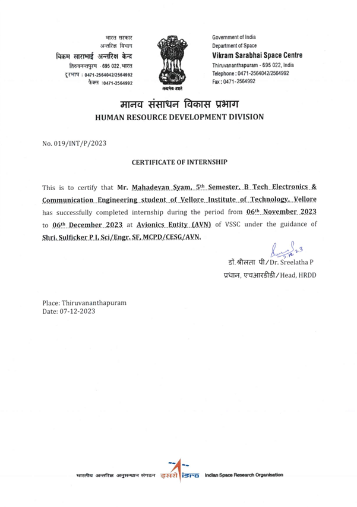
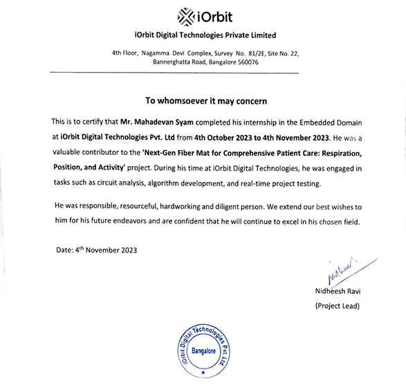
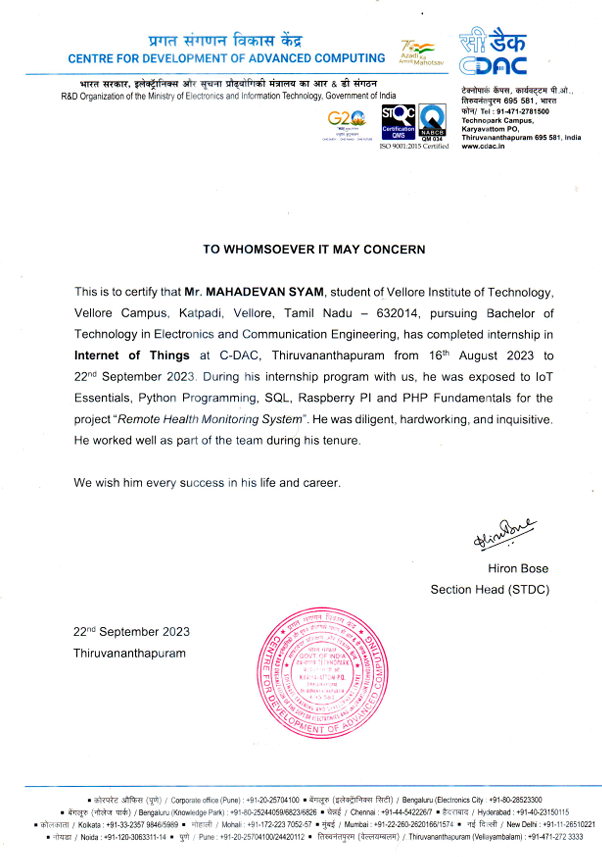

Professional Experience

Vikram Sarabhai Space Center (ISRO)
Timeline: November 2023
- Project: FPGA Based LVDT Signal Conditioning
- Developed a synthesizable sine wave generator and ADC interface using VHDL for FPGA.
- Designed analog circuits for filtering and rectification of LVDT sensor output.
- Skills Used: FPGA, VHDL, Spice Simulation

iOrbit Digital Technologies
Timeline: October 2023
- Project: Next-Gen Fiber Mat for Patient Care
- Wrote Embedded C scripts to read data from fiber optic mat sensors.
- Contributed to Python-based data filtering and 3D hardware modeling.
- Skills Used: Embedded C, Python, Circuit Design, 3D Modeling

CDAC Thiruvananthapuram
Timeline: August 2023 – September 2023
- Project: IoT Based Remote Health Monitoring System
- Automated sensor data collection using Python and integrated MySQL for data storage.
- Built a live website with PHP and HTML/CSS for real-time health monitoring.
- Skills Used: Python, MySQL, PHP, HTML/CSS, Flask